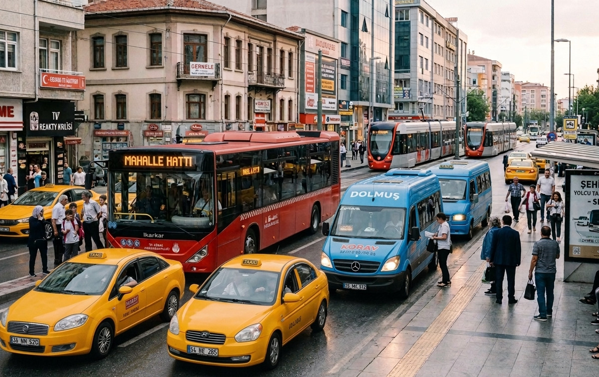

SRC 2 Belgesi Nedir?
SRC 2 belgesi, yurt içinde ticari amaçla yolcu taşıyan araç sürücülerinin alması gereken Mesleki Yeterlilik Belgesidir. Taksiciden okul servisi sürücüsüne, dolmuştan şehirlerarası otobüse kadar geniş bir sürücü kitlesini kapsar ve 4925 Sayılı Karayolu Taşıma Kanunu kapsamında zorunludur.
SRC 2, SRC 1'in aksine yalnızca yurt içi taşımacılığı kapsar. Uluslararası yolcu seferi yapacaksanız SRC 1 almanız gerekir; SRC 1, SRC 2'yi otomatik olarak da kapsar.

Kimler SRC 2 Belgesi Almak Zorunda?
- Ticari taksi ve hat taksisi sürücüleri
- Okul ve personel servis sürücüleri
- Şehirlerarası ve şehir içi otobüs sürücüleri
- Dolmuş ve minibüs sürücüleri
- Turizm amaçlı yurt içi yolcu taşıyan araç sürücüleri
- Çocuk taşıyan servis araçları sürücüleri

SRC 2 Belgesi Alma Şartları
- 19 yaşını doldurmuş olmak (66 yaşından küçük)
- En az ilkokul mezunu olmak
- B, D veya D1 sınıfı sürücü belgesine sahip olmak
- Geçerli psikoteknik raporu almış olmak
- MEB onaylı merkezde 36 saatlik SRC 2 eğitimini tamamlamak
- MEB SRC sınavında başarılı olmak
Hangi Ehliyet Sınıfı Gerekir?
| Araç Türü | Gereken Ehliyet | SRC 2 Yeterli mi? |
|---|---|---|
| Taksi (binek araç) | B sınıfı | ✅ Evet |
| Minibüs dolmuş | B veya D1 | ✅ Evet |
| Okul servisi | B veya D1 | ✅ Evet |
| Şehirlerarası otobüs | D sınıfı | ✅ Evet |
| Uluslararası otobüs | D sınıfı | Ü SRC 1 gerekir |
Gerekli Evraklar
- 2 adet biyometrik fotoğraf
- Nüfus cüzdanı fotokopisi
- Ehliyet fotokopisi (B, D veya D1)
- Öğrenim belgesi fotokopisi (e-devletten alınabilir)
- Psikoteknik raporu (merkezimizde aynı gün alabilirsiniz)
Ankara'da Taksi Ruhsatı Alanlar İçin
Ankara'da ticari taksi ruhsatı başvurusunda SRC 2 belgesi ve psikoteknik raporu zorunlu belgeler arasındadır. Ruhsat sürecini bekletmemek için önce belgenizi tamamlayın. Merkezimizde SRC 2 kaydı ve psikoteknik randevusu aynı anda planlanabilir.
Eğitim Süreci
SRC 2 eğitimi 36 saatlik teorik eğitimden oluşur. Karayolu mevzuatı, yolcu hakları ve sorumluluğu, acil durum yönetimi, trafik psikolojisi ve sürücü sağlığı gibi konular işlenir. Eğitim hafta içi veya hafta sonu programlarında tamamlanabilir; ortalama süre 1-2 haftadır.